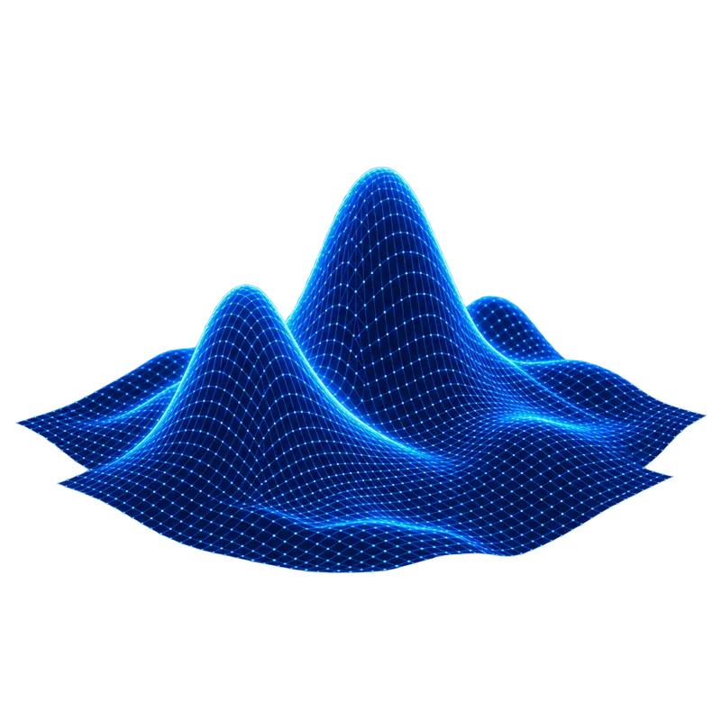
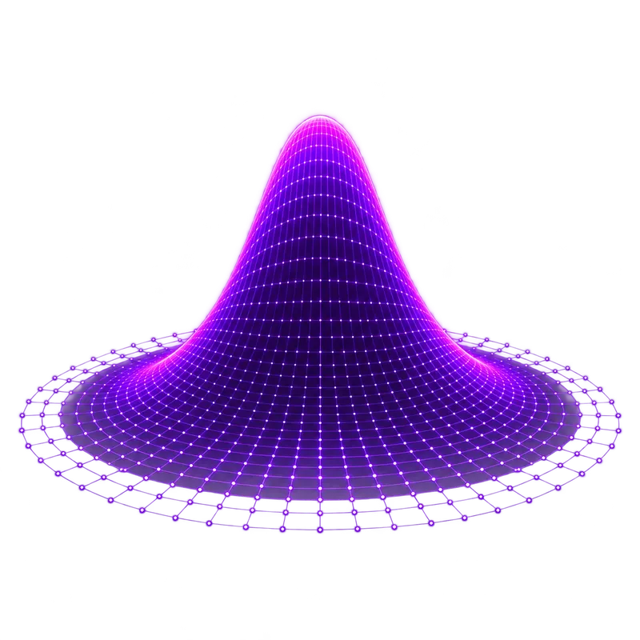
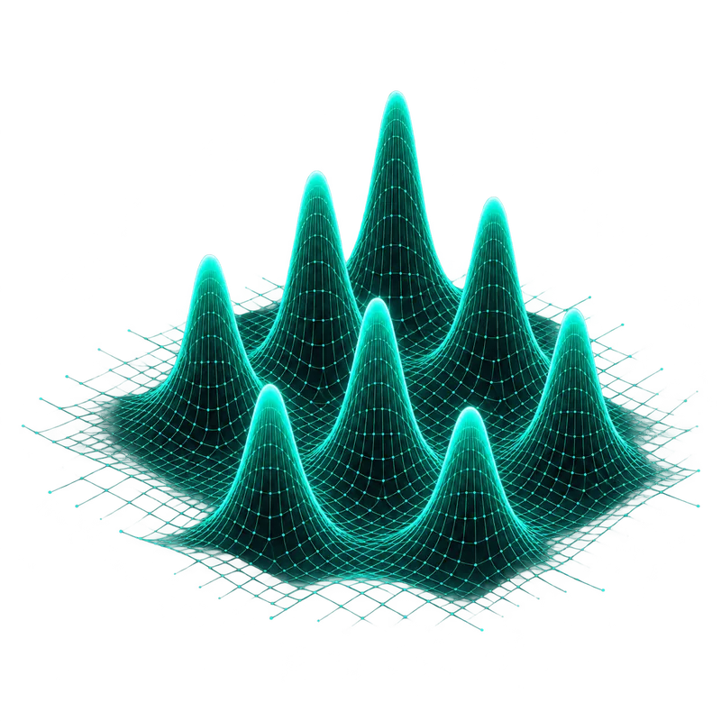
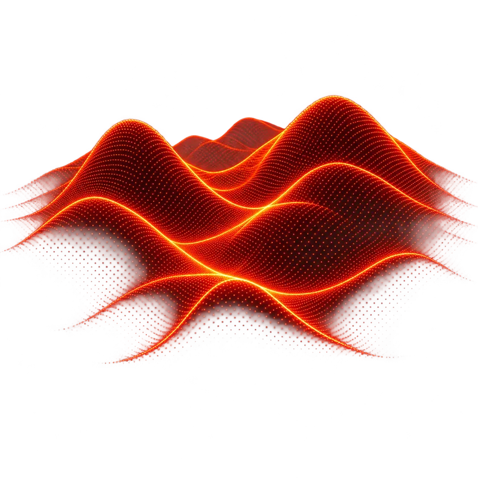

Deterministic
- MNE
- dSPM
- sLORETA
- eLORETA
- LCMV Beamformer
- Dipole Scan

Open source · MATLAB
Zeffiro Interface is MATLAB software for a tetrahedral volume conductor: import tissue surfaces, mesh, assemble a lead field, and reconstruct sources. The same pipeline covers EIT and TES. Source is GPL-3.0.
Layered views
One framework.
Deterministic, Bayesian, sparse and dynamic methods — all in one unified environment.
Browse all methods →


